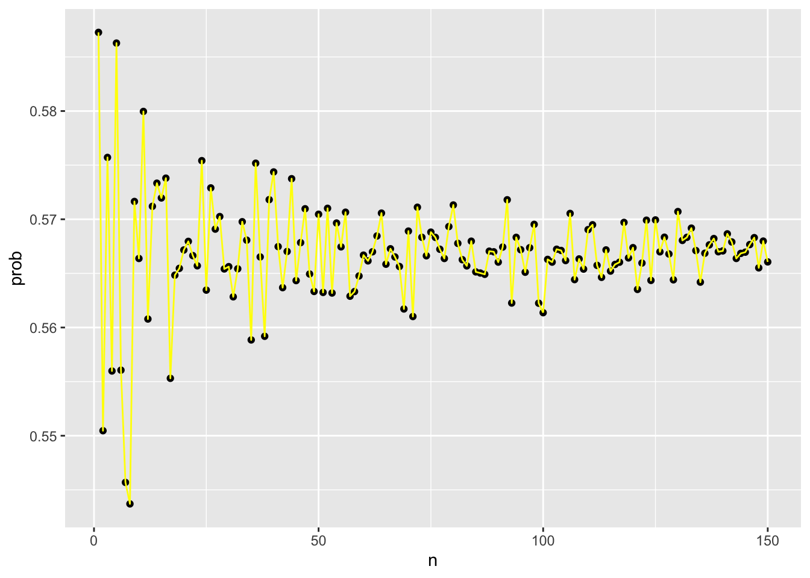
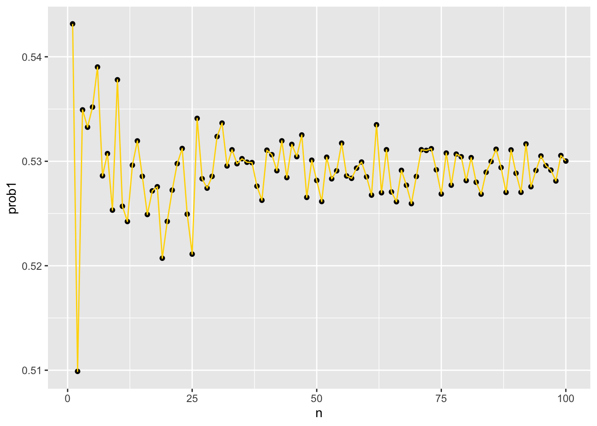

#Declaring as a function
x <- function(samplesize, proba, probb, probc, condp1, condp2, condp3) {
PI <- sample(c(1,2,3), size=samplesize, replace=TRUE,prob=c(proba,probb,probc))
test <- rep(NA, samplesize)
test[PI==1] <- sample(c('No','Yes'), size=sum(PI==1), replace=TRUE, prob = c(1-condp1,condp1))
test[PI==2] <- sample(c('No','Yes'), size=sum(PI==2), replace=TRUE, prob = c(1-condp2,condp2))
test[PI==3] <- sample(c('No','Yes'), size=sum(PI==3), replace=TRUE, prob = c(1-condp3,condp3))
mean(PI[test=='Yes']==1)
}Quiz-1
Submission: Submit completed document to Canvas
Problem:
Please read this case study and answer the following questions.
Apple introduced iPhone 14 and iPhone 14 Plus last week, featuring two sizes — 6.1 inches and 6.7 inches — in a sophisticated design with impressive camera upgrades featuring a new dual-camera system and groundbreaking new safety capabilities; including Crash Detection, a smartphone industry-first safety service with Emergency SOS via satellite, and the best battery life on iPhone. (~ Apple.com )
( This part is fictitious. )
Assume Apple Inc. is researching for a new feature for next year’s iPhone upgrade and you are one of the Data Scientists working in this research team. Your team wants to survey people in the most populous states in the US; California, Texas, Florida and New York. Suppose Your team has decided to have a big event outdoors for this research purpose, randomly picking people and asking them whether they like the new feature or not based on whether the people you picked currently uses an iPhone, uses a different phone and don’t want to switch phones ever or currently using another phone but hoping to switch to an iPhone in the future.
In New York; From those people you randomly picked, there were 340 people who are currently using an iPhone, 185 people using a different phone and don’t want to switch phones ever and 232 people are currently using another phone but hoping to switch to an iPhone in the future.
Of those who are currently using an iPhone, 80% like the new feature. From those who are currently using a different phone and don’t want to switch phones ever, 52% liked the new feature.From those who are currently using another phone but hoping to switch to an iPhone in the future, 48% liked the new feature.
- Notations.
- Use capital letters to denote different events in this question.
- Specify all probabilities mentioned in the problem using conditional probability notations and general probability notations.
\(I\) = No of People using an iphone = 340
\(B\) = people not using an iphone and do not want to switch to an iPhone in the future = 185
\(C\) = people not using an iphone and want to switch to an iphone = 232
\(L\) = : The event that a person likes the new feature.
Conditional probability notations:
\(P(L | I)\) = Probability of liking the new feature given that the person currently uses an iPhone = 0.80
\(P(L | B)\) = Probability of liking the new feature given that the person uses a different phone and doesn’t want to switch = 0.52
\(P(L | C)\) = Probability of liking the new feature given that the person uses another phone but hopes to switch to an iPhone in the future = 0.48
\(P(I) = \frac{340}{340+185+232}= 0.44914\)
\(P(B) = \frac{185}{340+185+232}= 0.24438\)
\(P(C) = \frac{232}{340+185+232}= 0.30647\)
- You can see that these probabilities are only for the survey conducted in New York. But you need to easily find the probabilities for any given state. Therefore, Write a function that will find the probability that if a person liked the feature then they are currently using an iPhone. (hint: this can be done by using the sample statistics provided above, combined with random number generation to create a representative random sample)
- Using the function you wrote above and using the New York data; find the probability that if a person liked the feature then they are currently using an iPhone.
#Declaring variable names
I <- 0.449
notI <- 1-I
B <- 0.24438
notB <- 1-B
C <- 0.30647
notC <- 1-C
PLI <- 0.80
notPLI <- 1-PLI
prob1 <- c(notI,I,notB,B,notC,C,notPLI,PLI)
condp2 <- 0.52
notcondp2 <- 1-condp2
condp3 <- 0.48
notcondp3 <- 1-condp3
prob1[1:2][1] 0.551 0.449prob1[3:4][1] 0.75562 0.24438 #Calculate probability for New York sample
print(x(samplesize = 767, proba = I, probb = B, probc = C, condp1 = PLI, condp2 = condp2, condp3 = condp3))[1] 0.5873984- Write a function to Calculate the probability directly without using a simulation, use that function to compute the probability and compare your answer to part 3.
calculating \(P(A | L)\) using the formula:
\(P(A | L) = \frac{P(A \cap L)}{P(L)} = \frac{\left(\frac{340}{757}\right) \cdot 0.80}{\left(\frac{340}{757}\right) \cdot 0.80 + \left(\frac{185}{757}\right) \cdot 0.52 + \left(\frac{232}{757}\right) \cdot 0.48}\) = \(0.565\)
#Function to calculate the probability:
calculate_prob <- function(total, P_A, P_B, P_C, PLI, PLB, PLC) {
# Calculate the probability of liking the new feature (P(L))
P_L <- (P_A * PLI) + (P_B * PLB) + (P_C * PLC)
# Calculate the probability of using an iPhone and liking the new feature (P(A ∩ L))
P_A_and_L <- P_A * PLI
# Calculate the conditional probability P(A | L)
P_A_given_L <- P_A_and_L / P_L
return(P_A_given_L)
}#Declaring variables
total <- 757
P_A <- 340 / total
P_B <- 185 / total
P_C <- 232 / total
PLI <- 0.80 # Probability of liking the new feature given using an iPhone
PLB <- 0.52 # Probability of liking the new feature given using a different phone and not wanting to switch
PLC <- 0.48 # Probability of liking the new feature given using another phone but hoping to switch to an iPhone
print(calculate_prob(total,P_A = P_A,P_B = P_B,P_C = P_C,PLI = PLI,PLB,PLC))[1] 0.5671866You can calculate this expression to find the probability that if a person liked the new feature, they are currently using an iPhone.
- Now use Monte Carlo simulation and compare your answer to the probability found in part 4. Here, write a function that can calculate the probability in part 3(the probability that if a person liked the phone then they are currently using an iPhone) for many different number of iterations (as in Monte Carlo simulation).
#Monte Carlo simulation for New York
library(tidyverse)── Attaching core tidyverse packages ──────────────────────── tidyverse 2.0.0 ──
✔ dplyr 1.1.2 ✔ readr 2.1.4
✔ forcats 1.0.0 ✔ stringr 1.5.0
✔ ggplot2 3.4.2 ✔ tibble 3.2.1
✔ lubridate 1.9.2 ✔ tidyr 1.3.0
✔ purrr 1.0.1
── Conflicts ────────────────────────────────────────── tidyverse_conflicts() ──
✖ dplyr::filter() masks stats::filter()
✖ dplyr::lag() masks stats::lag()
ℹ Use the conflicted package (<http://conflicted.r-lib.org/>) to force all conflicts to become errorslibrary(ggplot2)
compute_prob <- function(runtimes){
same_day <- replicate(runtimes,x(samplesize = 767, proba = I, probb = B, probc = C, condp1 = PLI, condp2 = condp2, condp3 = condp3))
mean(same_day)
}
n <- seq(1,150)
prob <- sapply(n, compute_prob)
qplot(n, prob) + geom_line(aes(n, prob), col = "yellow")Warning: `qplot()` was deprecated in ggplot2 3.4.0.
- What would be a rough minimum “large enough” number of iterations that you need to get a good probability. Use the New York Data to answer this question. (Hint: You can use a graph to answer this question).
A: Large enough would be a rough minimum of 150 simulations. by looking at the graph, it converges out to From the simulation above, we can see that approximately 150 simulations are enough 1. Assuming you do this survey again in California, Find the probability that this person is currently using an iPhone given that they like the feature.
a. Use your function from part 5 and the function you wrote in part 2 to find the above probability.#Sampling for California
cali <- function(samplesize, proba, probb, probc, condp1, condp2, condp3) {
PI <- sample(c(1,2,3), size=samplesize, replace=TRUE,prob=c(proba,probb,probc))
test <- rep(NA, samplesize)
test[PI==1] <- sample(c('No','Yes'), size=sum(PI==1), replace=TRUE, prob = c(1-condp1,condp1))
test[PI==2] <- sample(c('No','Yes'), size=sum(PI==2), replace=TRUE, prob = c(1-condp2,condp2))
test[PI==3] <- sample(c('No','Yes'), size=sum(PI==3), replace=TRUE, prob = c(1-condp3,condp3))
return(mean(PI[test=='Yes']==1))
}# Decalaring Variables
sS <- sum(610,580,330)
dF <- 580
dI <- 330
I <- 610
PI <- I/sS
PdF <- dF/sS
PdI <- dI/sS
condprob1 <- 0.92
condprob2 <- 0.48
condprob3 <- 0.67
print(cali(samplesize = sS, proba = PI, probb = PdF, probc = PdI, condp1 = condprob1, condp2 = condprob2, condp3 = condprob3))[1] 0.5247148library(tidyverse)
library(ggplot2)
#Monte Carlo Simulation
compute_probcal <- function(runtimes){
same_day <- replicate(runtimes,cali(samplesize = sS, proba = PI, probb = PdF, probc = PdI, condp1 = condprob1, condp2 = condprob2, condp3 = condprob3))
mean(same_day)
}
n <- seq(1,100)
prob1 <- sapply(n, compute_probcal)
mean(prob1)[1] 0.5292151qplot(n, prob1) + geom_line(aes(n, prob1), col = "gold")
b. Use the function you wrote in part 4 to calculate the above probability without using a simulation.print(calculate_prob(sS,P_A = PI,P_B = PdF,P_C = PdI,PLI = condprob1,PLB = condprob2,PLC = condprob3))[1] 0.5290846c. Compare these probabilities you got from the simulation with the probability you calculate by hand(Q7: part a and b). What can you conclude?
A: Both probabilities are almost the same, where as the monte carlo simulations are not as accurate as the calculated probabilities.Data: From those people you randomly picked, there were 610 people who are currently using an iPhone, 580 people using a different phone and don’t want to switch phones ever and 330 people are currently using another phone but hoping to switch to an iPhone in the future.
Of those who are currently using an iPhone, 92% like the new feature. From those who are currently using a different phone and don’t want to switch phones ever, 48% liked the new feature.From those who are currently using another phone but hoping to switch to an iPhone in the future, 67% liked the new feature.
What can you say about using Monte Carlo simulation for this problem?
A: Monte Carlo simulation offers a flexible and effective approach to address this problem. we obtain an estimated value for \(P(A∣L)\). This estimate represents the probability that if a person likes the new feature, they are currently using an iPhone.
Based on the data from these 2 states, as the Data Scientist in this research team, what would be your final (non-technical) conclusion?
A: This data suggests a positive response of the new feature among Iphone users and those with different phones who do not intend to switch.
Also, people in New York are likely to switch to an iPhone in the future compared to California.